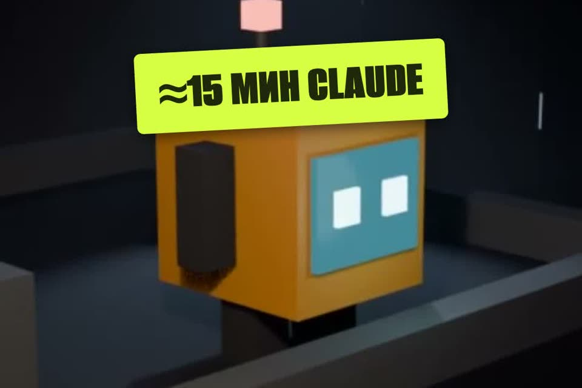

3D-сцена, а Blender я не открывал
Claude Code пишет сцену кодом на Python, Blender рендерит её в фоне без окна. Ниже наш промпт, скрипт, команды запуска, грабли и честные цифры времени.
- Blender бесплатный
- Claude по подписке
- без платных API
- проверено на M1 Max
К ролику «Blender без Blender» · обновлено 27 октября 2026

Blender (бесплатный, мы гоняли на 5.4 Alpha), Claude Code по подписке Claude и ffmpeg. В стабильной версии Blender часть имён может отличаться: тогда смотрите «Если застряли».
Первый рендер за 3 шага
Сохраните промпт в prompt.txt
Дословно то, что мы дали Claude.
Главное здесь — пункт 1: анимация задана в одном месте, а варианты меняют только внешний вид. Поэтому блокаут и финал совпадают кадр в кадр.
Напиши в этой папке один файл scene.py — скрипт Blender Python (bpy) для Blender 5.4, который запускается без интерфейса:
Blender -b --factory-startup --python scene.py -- --variant blockout|final --out <папка> [--start N --end N] [--scale 100]
Сцена: оранжевый кубик-робот с экраном-лицом прыгает по трём крышам низкополигонального ночного города, камера ведёт его. 8 секунд, 30 fps (240 кадров), кадр 1080×720.
Требования:
1. Анимация робота и камеры одна и та же в обоих вариантах, задаётся в одном месте кода. Меняется только внешний вид.
2. --variant blockout: серый блокаут, движок Workbench, только простые формы (кубы, капсулы), без материалов и текстур, однотонный серый.
3. --variant final: движок EEVEE, материалы (оранжевый робот, светящийся экран с глазами), ночное небо, свет, туман между домами, неоновые вывески без текста и без логотипов.
4. Робот делает три прыжка с крыши на крышу, с приседанием перед прыжком и сжатием при приземлении. Камера едет за ним сбоку-сзади, плавно, робот всё время в кадре.
5. Рендер в PNG-кадры <out>/####.png. Никаких внешних файлов, ассетов и сети: всё строится кодом.
6. Скрипт сам ничего не скачивает и пишет только в папку --out.
Сам Blender не запускай, только напиши файл. В конце ответа одной строкой — что сделал.Свою сцену описывайте так же: кто в кадре, что делает по секундам, куда смотрит камера, длительность, частота кадров, размер кадра. Просите простые формы, а не детального персонажа: кубы и цилиндры Claude собирает уверенно.
Запустите Claude Code в пустой папке
Создайте папку рядом с prompt.txt и дайте задачу.
mkdir blender-scene && cd blender-scene
claude -p "$(cat ../prompt.txt)" \
--setting-sources "" \
--tools "Read,Write,Edit" \
--permission-mode acceptEdits--tools "Read,Write,Edit"— Claude может только читать и писать файлы, без терминала. Запись ограничена текущей папкой.--setting-sources ""— без ваших личных настроек и скиллов, чистый запуск.- Для правок продолжите тот же разговор:
claude -p "что поправить" --resume <id сессии>с теми же флагами. Id сессии печатается при--output-format json. - Можно и обычный чат Claude: попросите тот же файл и сохраните его руками.
В папке файл scene.py, а в конце ответа одна строка о том, что сделано. Сам Blender Claude не запускает.
Отрендерите блокаут и финал
Blender без окна (-b), затем кадры в mp4.
На Mac путь такой, на Windows и Linux — путь к вашему blender. Наш готовый scene.py запускается этими же командами и сразу даёт те же два ролика.
B=/Applications/Blender.app/Contents/MacOS/Blender
# серый блокаут
$B -b --factory-startup --python scene.py -- --variant blockout --out out/blockout
# финал
$B -b --factory-startup --python scene.py -- --variant final --out out/final
# кадры в mp4
ffmpeg -framerate 30 -i out/blockout/%04d.png -c:v libx264 -pix_fmt yuv420p -crf 18 blockout.mp4
ffmpeg -framerate 30 -i out/final/%04d.png -c:v libx264 -pix_fmt yuv420p -crf 18 final.mp4--factory-startup— Blender стартует с заводскими настройками, ваши аддоны не мешают.- Черновик:
--scale 25даёт кадр в четверть размера. У нас финал так считался 1,5 минуты против 3 минут на полном кадре: выигрыш скромный, но падение видно сразу. Блокаут смотрите всегда первым, он считается секунды. - Склеить «было → стало» в один вертикальный кадр:
ffmpeg -i final.mp4 -i blockout.mp4 -filter_complex vstack both.mp4. - Если ffmpeg нет, Blender умеет писать видео сам, попросите это в промпте.
blockout.mp4 и final.mp4 с одной и той же анимацией. У нас блокаут считался 26 секунд, финал 3 мин 8 с (Mac на M1 Max). Если финал упал с ошибкой, отдайте её текст Claude, см. «Если застряли».
Что получилось у нас
Один скрипт выдаёт два ролика с одной и той же анимацией: серый блокаут и готовый ночной город.

- 3 запроса к ClaudeПервый написал сцену (948 строк), второй починил падение финала, третий поправил картинку: крупнее робот, видно лицо, темнее город. Blender Claude сам не запускал.
- Claude работал 15 минут9 мин 14 с на первый вариант, 2 мин 51 с и 3 мин 7 с на две правки.
- Блокаут: 240 кадров за 26 секунд8 секунд видео, 1080×720, 30 кадров в секунду, движок Workbench.
- Финал: 240 кадров за 3 мин 8 сТе же 8 секунд на EEVEE с туманом и размытием в движении, это 0,8 с на кадр. Mac на M1 Max, 64 ГБ.
Готовый скрипт: blender/scene.py. Его можно запустить у себя командой из шага 3 и сразу получить те же два ролика.
Если застряли: грабли, на которые мы наступили
Итого у нас ушло три запроса: сцена, текст ошибки, замечания по картинке.
Финал падает: «Node type … undefined»
Claude не видит Blender. Первый скрипт написан вслепую: блокаут отрендерился сразу, финал упал на второй секунде с ошибкой Node type ShaderNodeValRamp undefined. Такой ноды нет и не было, правильное имя ShaderNodeValToRGB. Лечится просто: вставьте Claude текст ошибки из лога как есть.
Лица героя не видно в кадре
Камера «сбоку-сзади» прячет лицо. Мы так и написали, и экран-лицо робота не попал в кадр ни разу. Ракурс формулируйте под то, что должно быть видно: «на три четверти спереди, лицо видно».
Герой теряется на фоне
Фон съел героя. Окна домов светились ярче робота, на маленьком кадре он был бурым пятном. Помогло сказать прямо: «робот занимает четверть высоты кадра, город темнее, главный объект — робот», и попросить свет, который едет вместе с ним.
Финал считается слишком долго
Медленный финал. Первая версия ставила 64 сэмпла и плотный объёмный туман: 471 секунда на 240 кадров даже в четверть размера, почти 2 секунды на кадр. После просьбы «уложись в 3–4 секунды на полном кадре» Claude срезал сэмплы до 16 и упростил туман, и полный кадр стал считаться 0,8 секунды.
Нет свечения (bloom)
Свечение в 5.4 Alpha. Свойство glare_type у ноды свечения в этой сборке не нашлось. Скрипт написал предупреждение в лог и отрендерил без bloom вместо падения. Просите Claude именно так: на незнакомых свойствах предупреждать, а не падать.
Неон стал слабым
Неон слабый. После того как мы попросили темнее город, вывески тоже потускнели. Это четвёртая правка, мы её не делали.
Через MCP: mcp-for-blender (MIT)
ahujasid/mcp-for-blender (раньше назывался blender-mcp) — сторонний плагин, не от Blender Foundation. Лицензия MIT, около 32 тысяч звёзд, последний коммит 24.10.2026. Состоит из двух частей: аддон внутри Blender поднимает сокет-сервер на порту 9876, а MCP-сервер передаёт ему команды от Claude.
Чем отличается от нашего пути: Blender открыт, и Claude работает в живой сцене. Он сам запускает код и сам смотрит результат с камеры, сбоку или лентой кадров анимации, то есть может поправить себя без вас. Ещё он подтягивает готовые модели и текстуры с Poly Haven, Sketchfab, Poly Pizza и умеет генерировать 3D-модели через платные сервисы.
execute_blender_code выполняет в Blender любой Python, поэтому авторы советуют сохранять работу перед использованием. Есть безопасный режим BLENDER_MCP_SAFE_MODE=1: он проверяет скрипт и не даёт читать и писать файлы напрямую, запускать программы и ходить в сеть. Телеметрия по умолчанию минимальная, отключается переменной DISABLE_TELEMETRY=true.Установка по READMEвручную, нужен менеджер пакетов uv
Нужен uv.
# 1. сервер для Claude Code
claude mcp add blender uvx mcp-for-blender
# 2. аддон в Blender
uvx mcp-for-blender install-addon
# затем в Blender: Edit → Preferences → Add-ons → включить «Interface: MCP for Blender»
# 3. в окне Blender: клавиша N → вкладка «MCP for Blender» → Start MCP ServerДля Claude Desktop вместо первой строки в конфиг (Settings → Developer → Edit Config) добавляется:
{
"mcpServers": {
"blender": { "command": "uvx", "args": ["mcp-for-blender"] }
}
}В README есть и установка одной командой через curl … | sh с сайта проекта. Она сама правит конфиги всех найденных AI-приложений (с резервными копиями). Мы бы сначала прочитали скрипт.
Блокаут как референс движения для видеомоделей
Идея из оригинального ролика: серый блокаут задаёт, куда движутся герой и камера, а видеомодель дорисует картинку. Что об этом пишут сами разработчики моделей, коротко и без обещаний. Мы этот шаг на нашем блокауте не прогоняли.
LTX (Lightricks), открытые весаIC-LoRA по глубине, позе и контурам
Для LTX-2 есть IC-LoRA: генерация по управляющему видео, выровненному кадр в кадр с результатом. Бывают по глубине, позе и контурам (canny), а для LTX-2.3 есть Union Control — все три в одной. Блокаут прогоняется через карту глубины или контуры, и модель держит его геометрию и движение камеры. У Lightricks есть отдельная LoRA «Layout-To-Render», но её карточка закрыта, мы её не читали. Лицензия весов — LTX-2 Community License, не MIT: перед коммерческим использованием прочтите её.
Kling Motion Controlоблачный, платный
Переносит движение персонажа с референсного видео на картинку героя. Kling в своём гайде советует референс без склеек и без движения камеры, с видимым телом и головой. Наш блокаут с едущей камерой под это не подходит: для Kling рендерьте отдельный вариант со статичной камерой.
Что просить у Claude для этоготретий вариант рендера
Третий вариант рендера: тот же блокаут, но без теней, с контрастными однотонными силуэтами, или сразу проход глубины (Z-pass). Длительность и частоту кадров ставьте как у модели, в которую пойдёт референс.
Ограничения
- Мы гоняли Blender 5.4 Alpha. В стабильной версии часть имён может отличаться.
- Claude не видит Blender и пишет сцену вслепую: первая версия может упасть, ошибку надо отдать ему руками.
- Цифры времени — наш Mac на M1 Max, 64 ГБ. У вас будет по-своему.
- Путь через MCP и блокаут для видеомоделей мы не прогоняли, это пересказ документации.